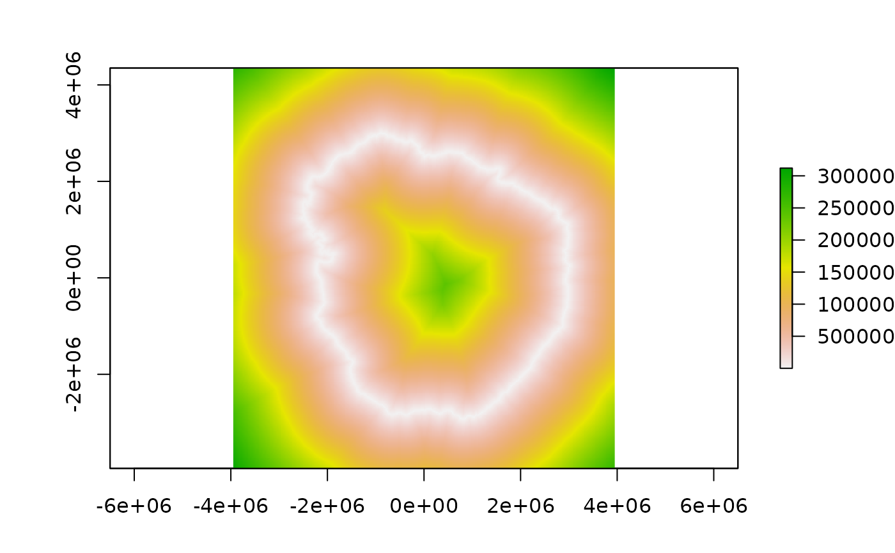

Distance to a sea ice 'edge'.
Calculate the shortest distance (metres) to a threshold sea ice contour. If in doubt use `distance_to_ice_edge`, the definition of the edge is not straightforward, especially so for the higher resolution products and near the coast. `distance_to_ice_edge` computes a single "main" edge at continental scale `distance_to_ice` computes all distances to any ice at threshold concentration
distance_to_ice_edge(date, threshold = 15, ..., returnfiles = FALSE, inputfiles = NULL) distance_to_ice(date, threshold = 15, ..., returnfiles = FALSE, inputfiles = NULL)
Arguments
| date | date or dates of data to read, see Details |
|---|---|
| threshold | the sea ice concentration threshold to contour at |
| ... | passed to `readice`, e.g. `hemisphere` |
| returnfiles | ignore options and just return the file names and dates |
| inputfiles | input the files data base to speed up initialization |
Value
raster layer with distances to this date's sea ice edge
Details
The distance is always positive, use `readice` in the usual way to determine if a location is inside or out of the ice field itself. (If inside means zero distance to ice for you then set it explicitly based on the concentration a point is in.) Future work may generalize this to other data sources.
Note
beware that any queried location outside of this layer's range will be undetermined, and the external boundary of this layer is not constant with respect to the pole, and that in general a location may be closer to ice in the opposite hemisphere.
The argument `hemisphere` may be north or south (default is south), but this will only work if your locations are on the actual map, so it's not possible to request the distance to ice in both poles for any point.
Examples
plot(distance_to_ice(latest = TRUE))plot(distance_to_ice_edge(latest = TRUE))#> Error in .local(x, ...): unused argument (format = "matrix")#> Error in .local(x, ...): unused argument (format = "matrix")# library(trip) # extract(distance_to_ice_edge, walrus818[seq(50, 400, by = 20), ], hemisphere = "north")